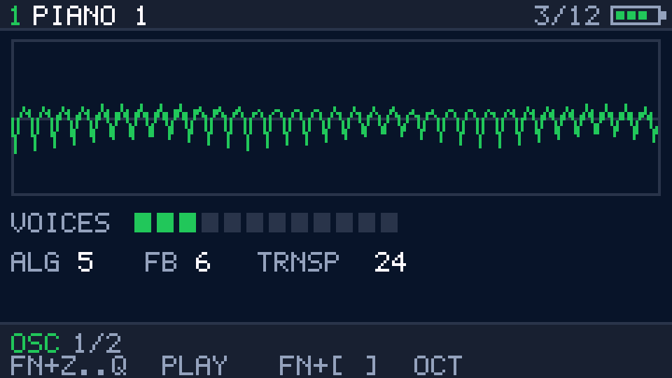
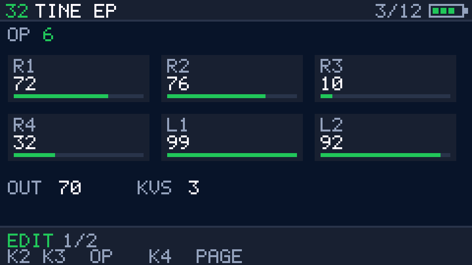
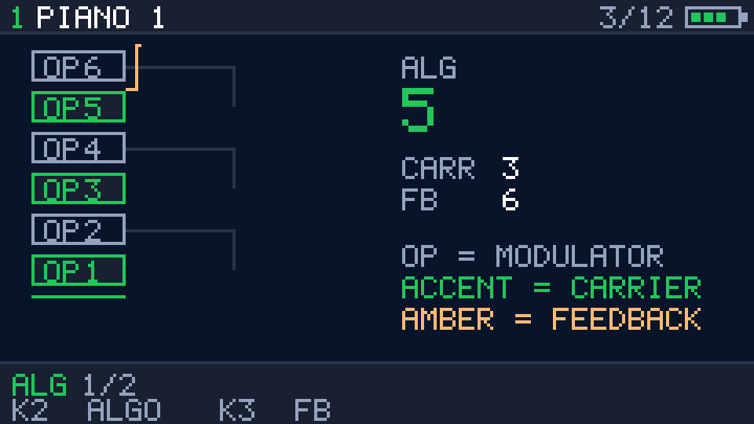
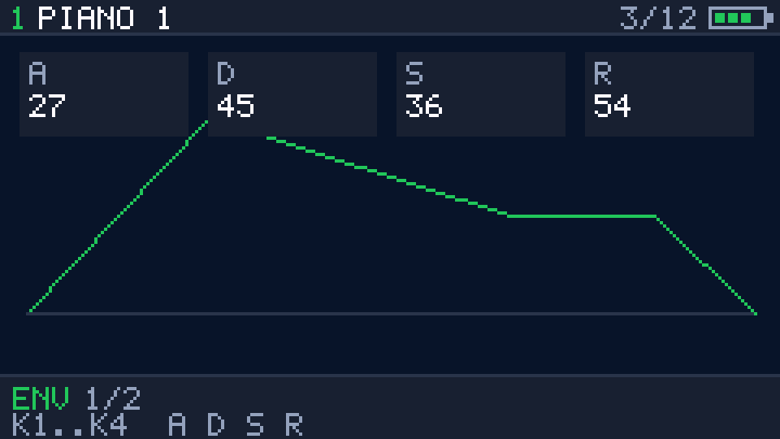
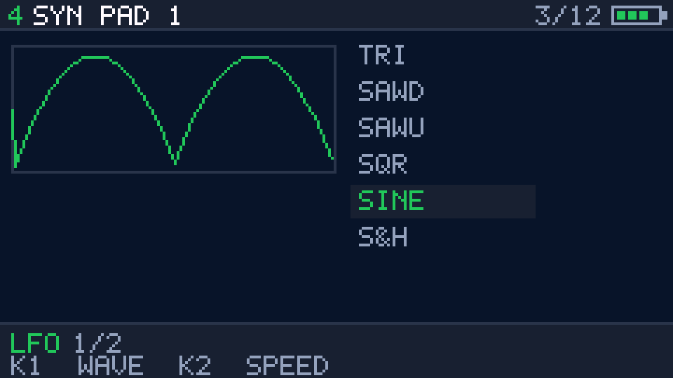
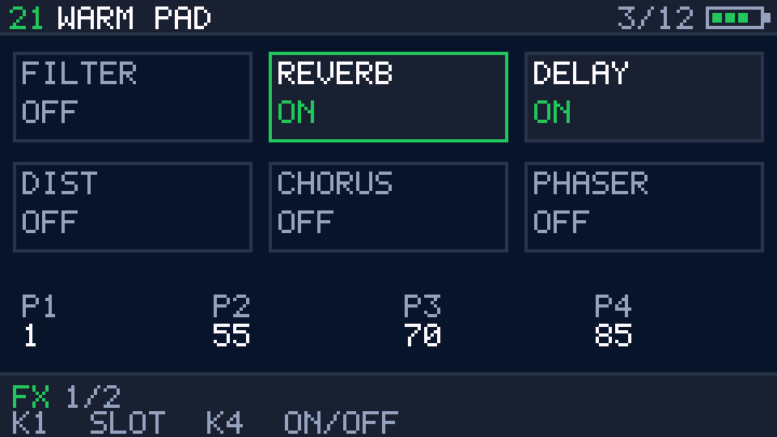
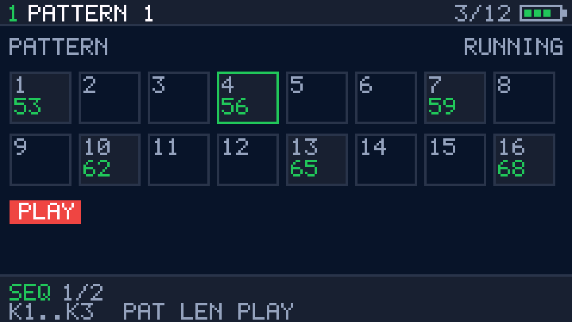
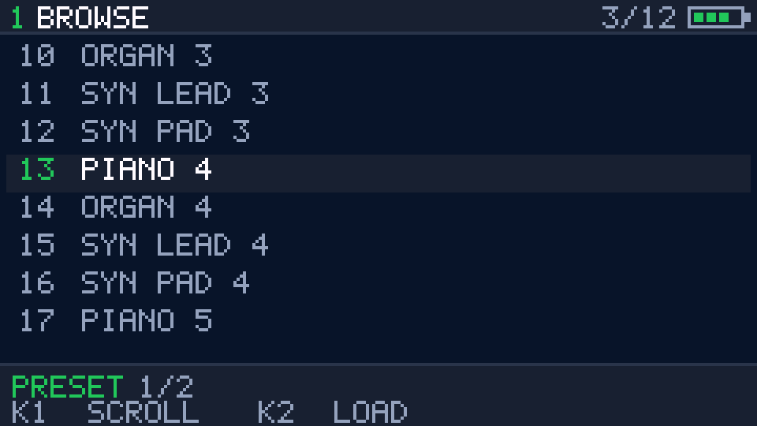
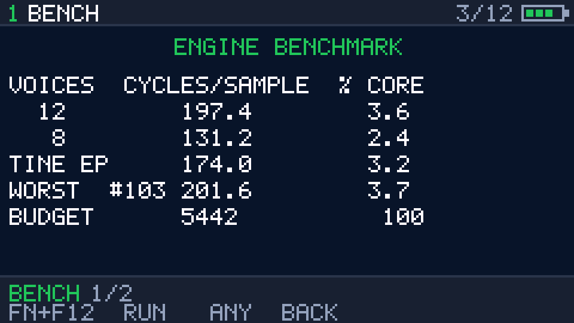

six-operator FM · ESP32-S3
An FM-1-class synth that fits in your card.
The M-VAVE FM-1 is a six-operator FM instrument. Its engine runs on a JieLi chip that cannot be ported, but the algorithm is published — so this is the same algorithm, rebuilt in integer C for the M5Stack Cardputer ADV, and gated bit-exact against upstream msfa.

the actual interface
Every screen is the renderer's own output
These images are not mock-ups. Each one is produced by
fm_ui_render() — the same function the firmware calls into a
framebuffer — and dumped to PNG by test/host/screenshot.c. If a page
is wrong, the picture is wrong in exactly the same way the device would be.








The benchmark screen is the point
Whether 12 voices fit in one 240 MHz core is not a guess in this project: press Fn+F12 on the device and it measures itself. Until that number is read off real hardware, every performance figure here is an estimate and is labelled as one.
fidelity
The engine is the published algorithm, not an imitation
The stock FM-1's app.bin contains msfa's 32-row algorithm table
verbatim at offset 0x8BE8C (V15) — confirmed by byte comparison
against upstream fm_core.cc. That is why msfa is the fidelity target:
it is what the instrument actually runs.
| Gate | Result |
|---|---|
| Engine vs upstream msfa | 606,720 samples, 0 mismatches |
| Coverage | 32 algorithms × feedback 1–7, velocities 1–127, notes 0–127, release from every envelope stage, 6 LFO waves with PMD/AMD, pitch envelope, bend, block boundaries |
| Lookup tables | generated by compiling msfa's own Sin::init,
Exp2::init, Freqlut::init — not re-derived |
| Factory bank | sha256 ecad0b86…6aad25 = the hash M-VAVE publishes |
| Voice formats | 156-byte patch, 128-byte record, VCED, VMEM, FM-1 parameter write |
| MIDI | M-VAVE's own MIDI document: note/FX channels, CC 0–23, realtime, SysEx |
| Footprint | 9,216 B engine state · 37 KB tables and bank in flash · 64,800 B RGB565 framebuffer · DIRAM 49 % used, 175 KB still free |
reproduce it
Build it yourself
The engine has no ESP-IDF dependency, so the whole instrument is testable on a desktop. Five suites run in about three seconds.
# the gates git clone https://github.com/NaustudentX18/cardputer-fm1 cd cardputer-fm1 tools/fetch_msfa.sh # vendor the Apache-2.0 reference (not committed) tools/run_host_tests.sh # bit-exactness, bank, formats, MIDI, FX, keymap # the firmware source $IDF_PATH/export.sh idf.py set-target esp32s3 && idf.py build
Requires cc and c++ for the gates, ESP-IDF 5.5 for the
firmware. No hardware is needed to run the tests.
Not yet run on hardware
No Cardputer ADV was attached while this was written. The firmware compiles,
links and sizes; the codec init, keypad driver, I²S path and audio deadline are
written and unexecuted. docs/status.md splits every claim into
verified / unexecuted / not started.
licence
Apache-2.0, and why
The engine is ported from msfa (Apache-2.0) and the factory bank is M-VAVE's V15 bank, also Apache-2.0. Felucca is an excellent GPL-3.0 firmware for the real FM-1, and it is deliberately not used here: taking it would force this project to GPL-3.0. Two places where Felucca departs from msfa are noted in the source, and this project keeps msfa's behaviour because bit-exactness is the gate.
FM-1 and DX7 are trademarks of their owners. This project
is not affiliated with M-VAVE, Yamaha or Hügelton Instruments.